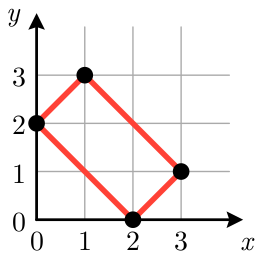
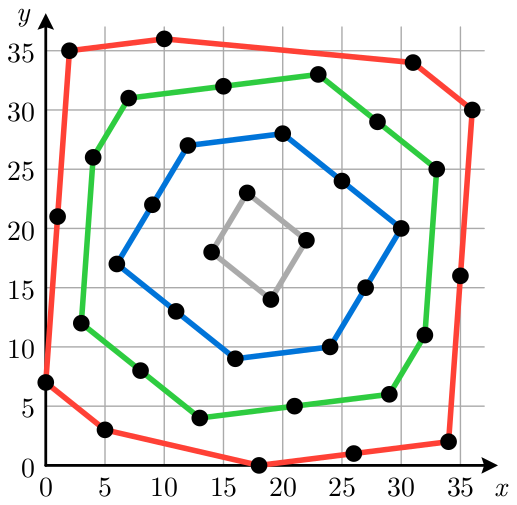

Onion
Onions are widely used in cuisines around the world. This problem is about an “onion peeling” process in geometry.
A set of points in a two-dimensional plane is convex if, for any pair of points \(p\) and \(q\) in the set, the line segment connecting \(p\) and \(q\) is entirely contained in the set. For a set of points \(S\), its convex hull is the smallest convex set containing all points in \(S\).
You are given four integers \(n\), \(a\), \(b\), and \(k\). You have a set \(S\) of \(n\) points, initialized as follows:
\[ S = \{(x, (ax + b) \bmod n) \mid x = 0, 1, \ldots, n-1\}. \]You apply the following operation \(k\) times: let \(H\) be the convex hull of the set \(S\), and then remove from \(S\) all points that lie on the boundary of the convex hull \(H\).
Note that \(S\) can become empty. In that case, its convex hull is also empty, and its area is zero.
For each operation, determine the doubled area of the convex hull \(H\). It can be shown that this value is always an integer.
Input
The input consists of a single line containing four integers \(n\), \(a\), \(b\), and \(k\) (\(1 \le n \le 10^9\); \(0 \le a, b \lt n\); \(1 \le k \le 300\)).
Output
Output \(k\) lines. The \(i\)-th line should contain an integer representing the doubled area of the convex hull in the \(i\)-th operation.
4 1 2 1
8
Explanation for the sample input/output #1
Figure L.1 illustrates the points in \(S\) and the boundary of the convex hull in the first operation. The area of the convex hull is \(4\), and thus the doubled area is \(8\).

37 14 7 5
2257 1406 592 74 0
Explanation for the sample input/output #2
Figure L.2 illustrates the boundaries in the first four operations. The set \(S\) becomes empty after the fourth operation. The area for the fifth operation is \(0\).

280 40 12 4
131040 82880 39200 0